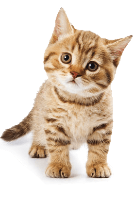

Welcome to MEOW!
Select "Networks" to connect to or change networks.
Select "Switches" to access switches.
Here is a cat.

This device by default creates its own network access point. It's how you got here the first time.
You can connect me to your own Wifi network: